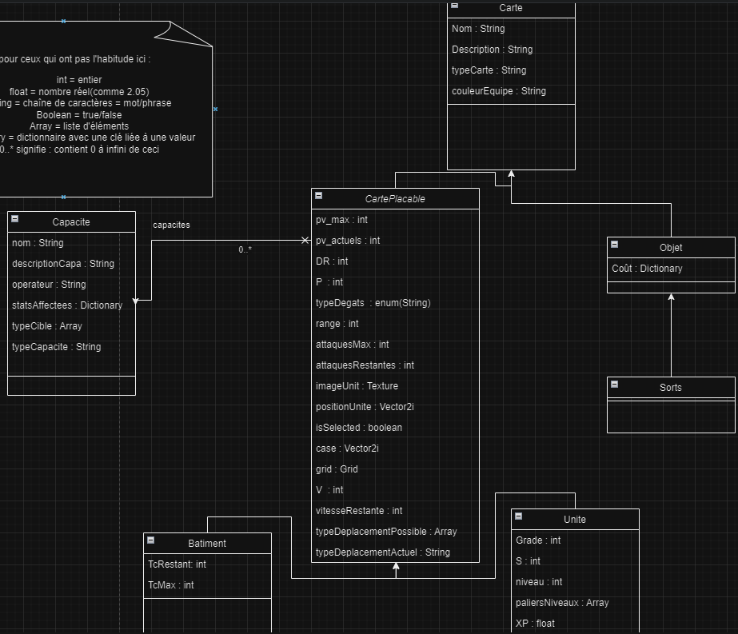
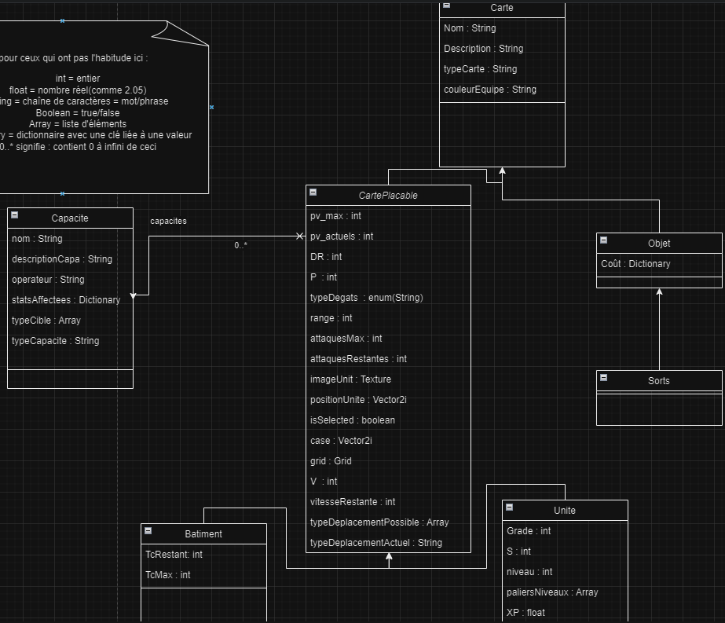

PROJETS
Jeu 2d de stratégie tour par tour sur Godot --> 2024-...
Langages utilisées :

Création d'un jeu vidéo avec 3 amis à partir d'un jeu de plateau créé au collège. Etant le seul programmeur, mon rôle est de réaliser le prototype sur Godot et en GDScript(qui est le langage utilisé sur Godot). Pour le moment, on peut faire apparaître des unités, les faire bouger, attaquer et utiliser leurs capacités passives et actives.

 
